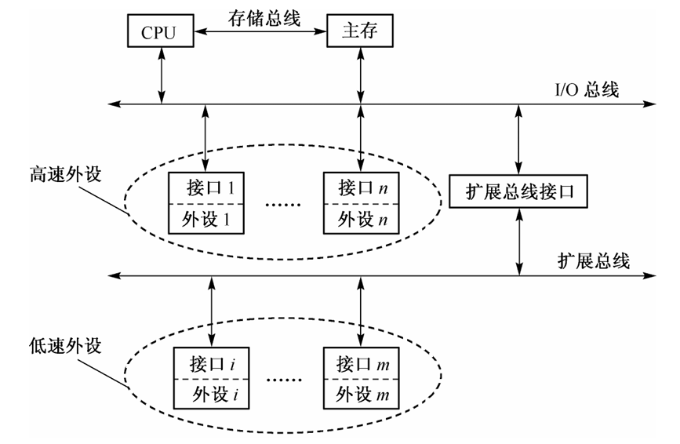
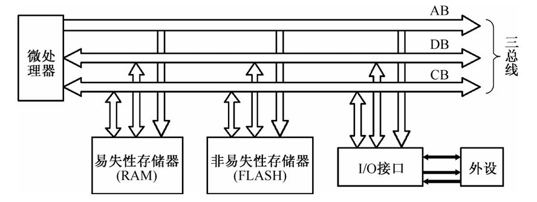

总线基本概念与原理
这是一条为强者节省时间的提示
如果你觉得自己已经掌握了总线相关的内容, 你可以跳过本小节.
总线的概念
什么是总线？
- 物理定义：总线是一种共享的传输媒介
- 连接到总线上的任何模块传输的信号可以被所有其他模块接收
- 同一时间段内只能有一个模块主动传输信号，其他模块只能被动接收
两种传输模式
| 传输模式 | 特点 | 应用场景 |
|---|---|---|
| 主从式传输 | 微处理器作为主设备主动发起传输，其他设备只能请求主设备 | 计算机系统内部及周边设备通信 |
| 对等式传输 | 任何一方都可以主动发起传输 | 远距离网络通信（如微信） |
总线工作特点
- 分时复用性：总线在不同时间段选择不同模块进行通信
- 共享性：所有模块共享同一传输信道
- 并行传输：通过多条线路同时传输多个二进制数字
总线性能指标
- 总线传输速率：单位时间内传输的总数据量
- 总线位宽越大、传输周期越短，传输速率越高
总线的分类
（1）按总线所处位置分类
| 类型 | 位置 | 示例 |
|---|---|---|
| 片内总线 | 微处理器芯片内部 | ARM的AMBA总线 |
| 系统总线 | 微处理器与存储器、外设接口之间 | 处理器引脚信号 |
| 系统外总线 | 系统之间、系统与外围设备之间 | USB、RS-232C |
现代发展趋势：
- 采用多级分层结构（存储总线、IO总线、扩展总线）
- 原系统总线功能逐渐集成到处理器内部

（2）按总线功能分类
经典三总线结构：
| 总线类型 | 功能 | 方向 | 作用 |
|---|---|---|---|
| 地址总线(AB) | 传送地址信号 | 单向 | 指定通信对象，决定寻址范围 |
| 数据总线(DB) | 传送数据 | 双向 | 数据传送通道，宽度影响性能 |
| 控制总线(CB) | 传送控制信号 | 复杂 | 时序控制、总线仲裁、中断控制 |

（3）按时序控制方式分类
| 类型 | 工作方式 | 优点 | 缺点 | 应用场景 |
|---|---|---|---|---|
| 同步总线 | 严格时钟周期定时 | 控制简单 | 灵活性差 | 各模块速度差异小的场合 |
| 异步总线 | 应答/握手方式 | 灵活性高 | 控制复杂 | 各模块速度差异大的场合 |
| 半同步总线 | 结合两者特点 | 灵活且相对简单 | - | 广泛应用，替代经典同步总线 |
（4）按数据传送格式分类
| 类型 | 传输方式 | 特点 | 应用 |
|---|---|---|---|
| 并行总线 | 同时传输多位数据 | 传输速度快，但信号干扰大 | 主要用于片内 |
| 串行总线 | 逐位传输数据 | 抗干扰强，适合远距离 | 芯片间通信 |
现代串行总线特点：
- 使用多个独立的"通道"并行工作
- 每个通道内部仍然是串行传输
- 兼顾了传输速率和抗干扰性